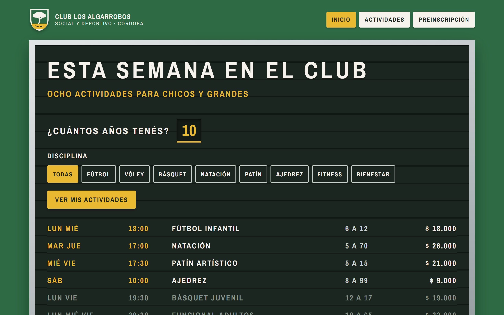
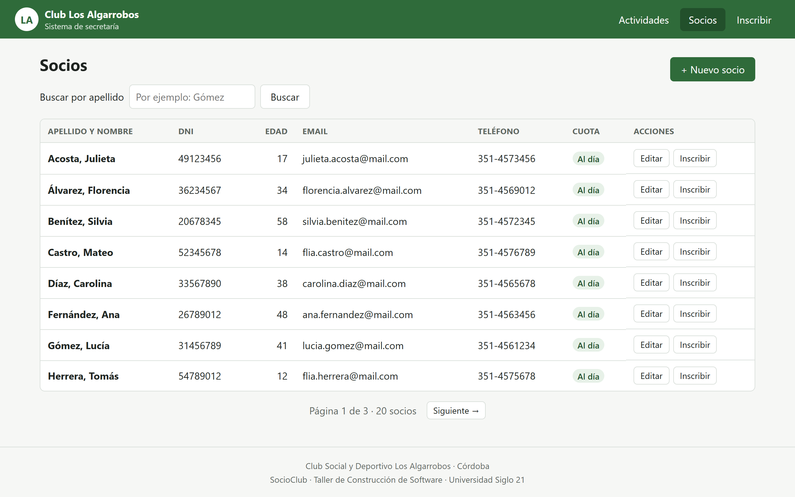
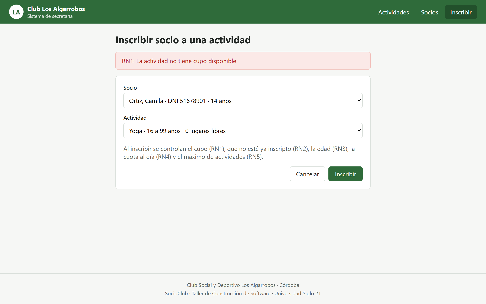
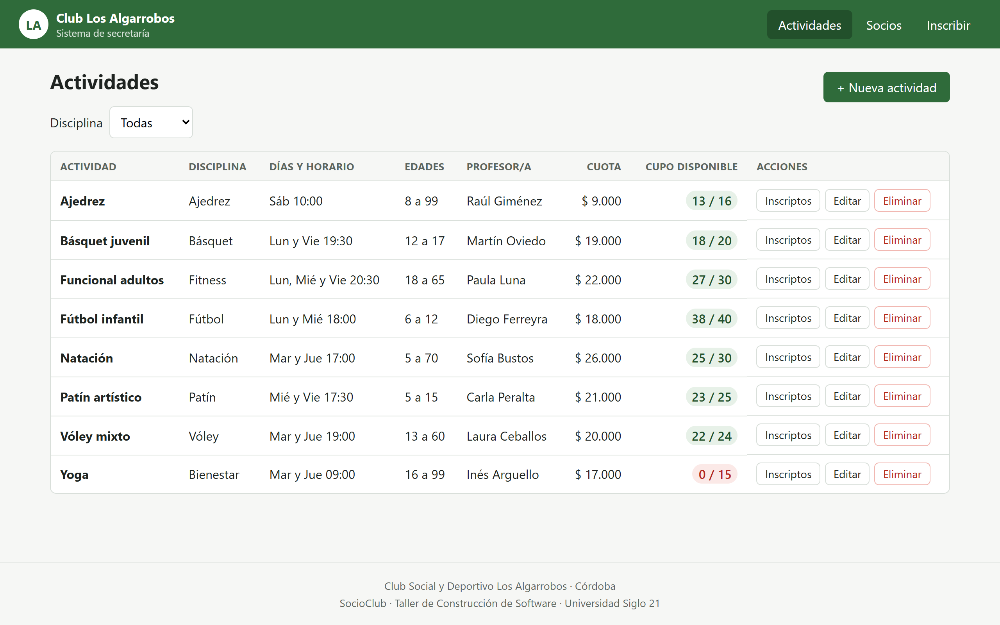
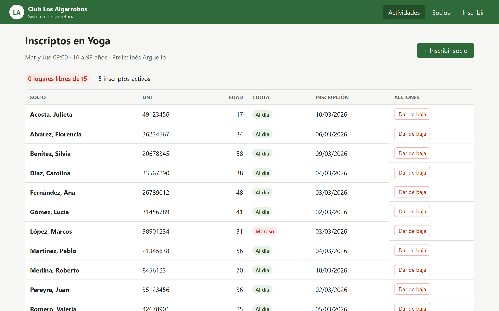
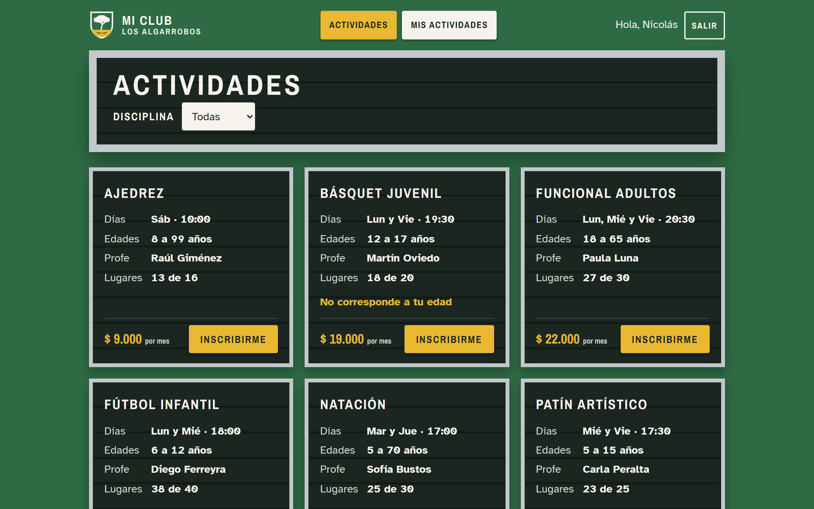
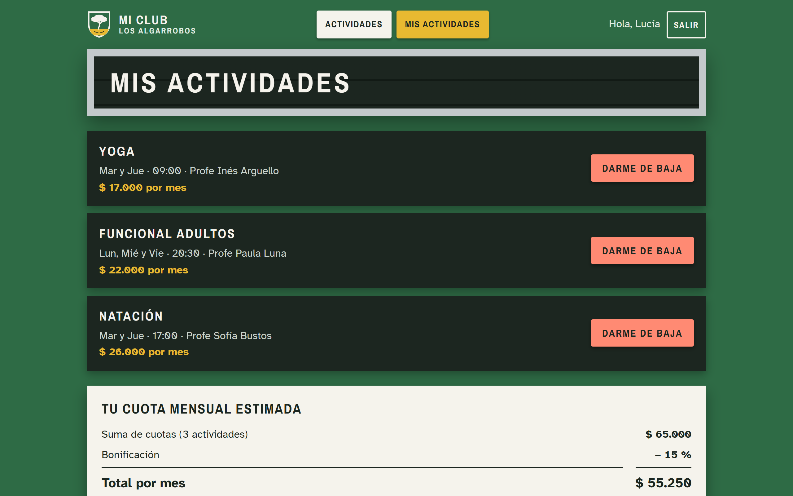
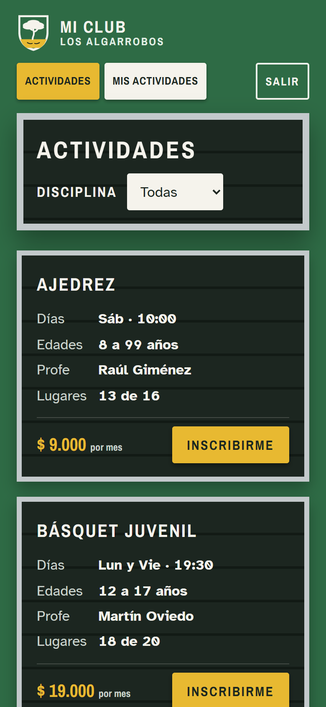

Taller de Construcción de Software · Trabajo Práctico Integrador
Sistema web de socios, actividades e inscripciones para el Club Social y Deportivo Los Algarrobos (Córdoba)
| Universidad | Universidad Siglo 21 |
| Grupo | 8 |
| Integrantes | Argüello, Gonzalo Nicolás Bellini, Bautista Gatti, Thiago Ochoa, Mariano Soria, Bruno Santiago |
| Fecha | Noviembre de 2026 |
El Club Social y Deportivo Los Algarrobos tiene alrededor de 650 socios y 8 actividades: fútbol infantil, vóley, básquet, natación, patín artístico, ajedrez, funcional y yoga. La gestión se hacía en un cuaderno y una planilla de Excel, y los horarios se avisaban por WhatsApp. Eso generaba cupos excedidos (52 chicos anotados en fútbol infantil con lugar para 40), inscripciones duplicadas, edades fuera de rango, socios morosos que se seguían anotando y vecinos que no sabían qué actividades había.
SocioClub resuelve los tres pedidos de la Comisión Directiva con tres caras sobre una sola base de datos y un solo backend:
| Componente | Para quién | Qué hace | Tecnología |
|---|---|---|---|
| A. Sitio público | Vecinos | Catálogo con día, horario, edades, profe y cuota; filtro por edad y disciplina; preinscripción validada | HTML5, CSS3, JavaScript |
| B. Sistema de secretaría | Secretaría | ABM de actividades, socios con paginación y búsqueda, inscripciones con las reglas, inscriptos y bajas | Spring Boot, Spring MVC, Thymeleaf, Spring Data JPA, MySQL |
| C. API REST | App de socios | Endpoints del Anexo A con JSON y códigos 200, 201, 204, 404 y 409 | Spring Boot @RestController |
| D. App "Mi Club" | Socios | Ingreso con DNI, catálogo, inscripción, baja y cuota mensual estimada | React (create-react-app), React Router, Axios, Context |
| E. Pruebas | Equipo | Pruebas unitarias, de componente, de la API y de sistema | Jest, React Testing Library, JUnit, Postman |
Se usaron solo las tecnologías de la materia: sin Lombok, Spring Security, Vite, Tailwind ni Redux. El backend es Spring Boot 3.5 con Java 17, la base es MySQL 8 en Docker y la app React se creó con create-react-app.
Idea clave: los controladores Thymeleaf (B) y los REST (C) llaman al mismo InscripcionService. Las reglas se escriben una vez y se validan igual entre por donde entre la inscripción. Ningún controlador accede directamente a un repositorio, y la inyección de dependencias se hace por constructor.
DetalleActividad, que llama a inscribir(socioId, actividadId) de servicios/api.js.POST /api/inscripciones con {"socioId": 20, "actividadId": 8}. El backend lo permite por la configuración de CORS para localhost:3000.InscripcionRestController recibe el cuerpo con @RequestBody y llama al servicio.InscripcionService.inscribir busca el socio y la actividad y aplica RN1 a RN5. Si una falla, lanza ReglaNegocioException y ApiExceptionHandler responde 409 con {"error", "regla"}.contarActivasPorActividad (@Query) y los métodos derivados consultan la base; save inserta la fila en inscripciones.InscripcionDTO. React guarda la actividad actualizada en el estado y vuelve a dibujar el cupo disponible.Socio tiene @OneToMany(mappedBy = "socio") hacia sus inscripciones, y getEdad() calcula la edad a la fecha de hoy.Actividad tiene @OneToMany(mappedBy = "actividad"), el método esAptaParaEdad(edad) y un campo @Transient cupoDisponible que calcula el servicio.Inscripcion es el lado dueño: dos @ManyToOne con @JoinColumn (socio_id y actividad_id).findByApellidoContainingIgnoreCase(apellido, Pageable), findByDni, findByDisciplinaOrderByNombreAsc, existsBySocioIdAndActividadIdAndEstado, countBySocioIdAndEstado.@Query: contarActivasPorActividad (RN1 y cupo disponible) y findDisciplinas.Pageable en el listado de socios (8 por página).La baja es lógica: la inscripción pasa a estado BAJA y no se borra, así queda el historial. Las tablas y los datos iniciales los crea database/socioclub.sql: las 8 actividades del enunciado y 20 socios pensados para demostrar cada regla (2 morosos, una socia con 3 actividades y Yoga con 14 de 15 lugares ocupados).
| Regla | Qué controla | Mensaje cuando falla | Dónde está |
|---|---|---|---|
| RN1 | Inscripciones activas no superan el cupo | La actividad no tiene cupo disponible | InscripcionService |
| RN2 | Sin inscripciones activas duplicadas | El socio ya está inscripto en esta actividad | InscripcionService |
| RN3 | Edad dentro del rango de la actividad | La actividad es para edades de X a Y años y el socio tiene Z | InscripcionService |
| RN4 | Socio moroso no se inscribe | Debe regularizar su cuota en secretaría | InscripcionService |
| RN5 | Máximo 3 actividades activas | Alcanzó el máximo de 3 actividades | InscripcionService.MAXIMO_ACTIVIDADES |
| RN6 | Cuota con 10 % de descuento con 2 actividades y 15 % con 3 | — | utils/calcularCuotaMensual.js |
| RN7 | DNI de 7 u 8 dígitos sin puntos | El DNI va sin puntos: 7 u 8 números | Sitio, app (esDniValido) y SocioService |
Las reglas se controlan en el orden de la consigna (RN1 a RN5) y se informa la primera que falla. El máximo de actividades es una constante, así que pasarlo de 3 a 4 se hace en una sola línea.
| Verbo | Ruta | Qué hace | Respuestas |
|---|---|---|---|
| GET | /api/actividades | Lista con cupo disponible. Acepta ?disciplina=Fútbol | 200 |
| GET | /api/actividades/{id} | Detalle de una actividad | 200 · 404 |
| POST | /api/actividades | Crea una actividad (con encabezado Location) | 201 · 400 |
| PUT | /api/actividades/{id} | Modifica una actividad | 200 · 404 · 409 |
| DELETE | /api/actividades/{id} | Elimina si no tiene inscriptos activos | 204 · 404 · 409 |
| GET | /api/socios/dni/{dni} | Busca un socio por DNI (ingreso a la app) | 200 · 404 |
| GET | /api/socios/{id}/inscripciones | Inscripciones ACTIVAS del socio | 200 · 404 |
| POST | /api/inscripciones | Inscribe: {"socioId", "actividadId"}. Aplica RN1 a RN5 | 201 · 404 · 409 |
| PUT | /api/inscripciones/{id}/baja | Baja lógica (estado BAJA) | 200 · 404 |
Por qué es REST: expone recursos identificados por URL (actividades, socios, inscripciones), usa los verbos HTTP según la operación (GET consulta, POST crea, PUT modifica, DELETE elimina), no guarda estado de sesión entre pedidos y representa los datos en JSON. A diferencia de SOAP, no necesita un contrato WSDL ni mensajes XML con sobre.
ApiExceptionHandler, un @RestControllerAdvice limitado a los controladores REST, convierte las excepciones del servicio en respuestas: RecursoNoEncontradoException responde 404 y ReglaNegocioException responde 409, con este cuerpo:
{ "error": "La actividad no tiene cupo disponible", "regla": "RN1" }
Los datos mal cargados, como una edad mínima mayor que la máxima, responden 400. Las vistas Thymeleaf atrapan las mismas excepciones y muestran el mensaje en pantalla.
Al devolver las entidades directamente, Jackson recorre Socio → inscripciones → Inscripcion → socio → inscripciones… sin fin. Lo resolvimos con DTOs: ActividadDTO, SocioDTO e InscripcionDTO copian solo los datos que necesita la app. InscripcionDTO lleva el socioId en lugar del socio completo, y ninguna clase incluye la lista de vuelta. Así la API no depende de cómo están mapeadas las entidades.
La app corre en localhost:3000 y la API en localhost:8080: son orígenes distintos, y por la política de mismo origen el navegador bloquea las respuestas si el servidor no lo autoriza. CorsConfig habilita /api/** para http://localhost:3000 con GET, POST, PUT y DELETE.

Actividad y se filtra con addEventListener.
Pageable).



TarjetaActividad recibe la actividad por props, avisa si no corresponde a la edad y se apaga sin cupo.
ResumenCuota: 3 actividades, 15 % de bonificación (RN6).
BrowserRouter: / (ingreso con DNI), /actividades, /actividades/:id y /mis-actividades.Encabezado, Pie, Ingreso, ListaActividades, TarjetaActividad, DetalleActividad, MisActividades, ResumenCuota y RutaPrivada. Llevan PropTypes en TarjetaActividad y ResumenCuota.createContext / useContext (SocioContext), y no se pasa por props. Se guarda en sessionStorage para no perderlo al recargar.useEffect con [] carga las disciplinas una vez; con [disciplina] vuelve a pedir el catálogo cada vez que cambia el filtro.src/servicios/api.js (Axios). Los mensajes 409 del backend se muestran tal cual al socio.| Archivo | Casos | Resultado |
|---|---|---|
calcularCuotaMensual.test.js (RN6) | 0 actividades → $0 · 1 → $17.000 · 2 → $38.700 (−10 %) · 3 → $55.250 (−15 %) · cuota como texto · sin arreglo · porcentajes | 7 pasan |
esDniValido.test.js (RN7) | 8 dígitos ✓ · 7 dígitos ✓ · con puntos ✗ · con letras ✗ · 6 dígitos ✗ · 9 dígitos ✗ · vacío, espacios, número y null ✗ | 7 pasan |
TarjetaActividad.test.js (React Testing Library: render, screen, fireEvent) | Muestra el nombre · con cupo 0 muestra "Sin cupo" y el botón queda deshabilitado · con lugar el clic avisa la actividad elegida · aviso de edad | 4 pasan |
InscripcionServiceTest reemplaza los repositorios por mocks, así que no necesita la base: inscripción exitosa, RN1, RN2, RN3, RN4, RN5, socio inexistente (404) y baja lógica. 8 pasan.
La colección postman/SocioClub.postman_collection.json tiene 25 pedidos, en tres carpetas, con 44 verificaciones (código de estado, contenido y mensaje de cada regla). Cubre todos los endpoints del Anexo A y los errores: 404 en cada recurso, 400 por datos inválidos, 409 al eliminar una actividad con inscriptos y 409 de RN1 a RN5. Corrida con Newman sobre la base recién cargada: 25 pedidos, 44 verificaciones, 0 fallas.
Los 6 casos se ejecutaron en las pantallas reales, con la base recién cargada y en este orden. Se alternó entre la app y el sistema de secretaría para mostrar que las dos usan el mismo servicio.
| Caso | Pasos | Resultado esperado | Resultado obtenido |
|---|---|---|---|
| 1. Inscripción exitosa | App: ingresar con DNI 45901234 (Nicolás Vega, 22 años, al día) → Yoga → Inscribirme | Se inscribe y Yoga queda sin cupo | "¡Listo! Quedaste inscripto en Yoga." |
| 2. RN1 · cupo | Secretaría: Inscribir → Camila Ortiz → Yoga | Rechazo por falta de cupo | "RN1: La actividad no tiene cupo disponible" |
| 3. RN2 · duplicado | Secretaría: Inscribir → Juan Pereyra → Vóley mixto (ya inscripto) | Rechazo por duplicado | "RN2: El socio ya está inscripto en esta actividad" |
| 4. RN3 · edad | App: DNI 52345678 (Mateo Castro, 14 años) → Fútbol infantil (6 a 12) → Inscribirme | Rechazo indicando el rango | "La actividad es para edades de 6 a 12 años y el socio tiene 14" |
| 5. RN4 · moroso | App: DNI 38901234 (Marcos López, moroso) → Ajedrez → Inscribirme | Rechazo por cuota impaga | "Debe regularizar su cuota en secretaría" |
| 6. RN5 · máximo | Secretaría: Inscribir → Lucía Gómez (3 actividades) → Ajedrez | Rechazo por máximo de actividades | "RN5: Alcanzó el máximo de 3 actividades" |
Usamos Claude (Anthropic) como asistente durante todo el desarrollo. En cada entrada figura qué le pedimos, qué devolvió y qué tuvimos que corregir. Todos los cambios fueron revisados por el grupo.
| N.º | Parte | Qué le pedimos a la IA | Qué nos devolvió | Qué estaba mal / qué cambiamos y por qué |
|---|---|---|---|---|
| 1 | B | "Generá el proyecto Maven con Spring Initializr con Web, Thymeleaf, JPA y MySQL." | Un proyecto con Spring Boot 4 (spring-boot-starter-webmvc, Jackson 3), la única versión que ofrece hoy Initializr. | Las lecturas usan Spring Boot 3 y spring-boot-starter-web. Pasamos a 3.5.16, la última 3.x, para respetar lo visto en la materia y usar las anotaciones de Jackson 2. |
| 2 | B | "En el listado de actividades, pedí confirmación antes de eliminar mostrando el nombre." | Un th:attr="onsubmit=…" con el nombre de la actividad adentro. | Thymeleaf bloquea por seguridad las expresiones dentro de atributos de eventos y la página fallaba. Dejamos un mensaje de confirmación fijo. |
| 3 | B | "Después de guardar, volvé al listado con un mensaje de éxito." | redirect: con RedirectAttributes (mensajes flash). | En la primera redirección la URL quedaba con ;jsessionid=…. Configuramos server.servlet.session.tracking-modes=cookie. |
| 4 | A | "Armá las fichas del catálogo de actividades siguiendo el diseño de la cartelera." | Tarjetas opacas idénticas, con ícono, título y lista. | Era la plantilla genérica de tarjetas que el diseño rechazaba. Las rehicimos como letras sobre las ranuras del paño, con un riel entre actividades. |
| 5 | A | "Verificá que el sitio se vea bien en celular." | Capturas "a 390 px" tomadas con Edge sin interfaz. | Edge en Windows no dibuja por debajo de unos 500 px: las capturas eran inválidas. Con capturas reales aparecieron dos errores: tarjetas que se salían 3 px (lo corregimos con minmax(0, 1fr)) y un botón de 26 px (llevamos el área táctil a 44 px). |
| 6 | C | "Implementá los endpoints del Anexo A reutilizando el servicio." | Controladores REST con DTOs y manejo de errores. | La colección de Postman detectó que POST /api/inscripciones devolvía cupoDisponible: null: el cupo es un campo calculado y solo lo completaba ActividadService. Lo calculamos también en InscripcionService. |
| 7 | C / E | "Reiniciá la base y levantá todo para correr las pruebas." | docker compose up -d y enseguida el backend. | El backend fallaba con Communications link failure porque MySQL todavía estaba cargando el script. Agregamos un healthcheck al docker-compose.yml y usamos up -d --wait. |
| 8 | D | "Creá TarjetaActividad con PropTypes y un valor por defecto para la prop opcional." | TarjetaActividad.defaultProps = {…}. | React 19, que instala create-react-app hoy, ya no aplica defaultProps en componentes funcionales. Lo cambiamos por un valor por defecto en el parámetro: { esParaMiEdad = true }. |